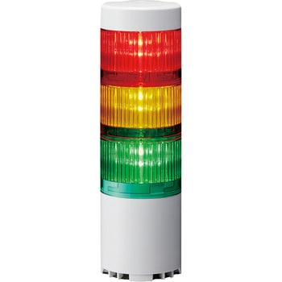

<!DOCTYPE html>
<html lang="ja">
  <head>
    <meta charset="utf-8">
		<meta name="viewport" content="width=device-width,initial-scale=1">
    <link rel="stylesheet" href="style.css">
    <meta charset="utf-8">
    <script src="https://aframe.io/releases/1.2.0/aframe.min.js"></script>
    <script src="https://raw.githack.com/AR-js-org/AR.js/master/aframe/build/aframe-ar.js"></script>
  </head>
  <body>
    <a-scene vr-mode-ui="enabled: false;" embedded arjs="debugUIEnabled: false;">
      <a-assets>
        <!---->
        <a-asset-item id="light-obj" src="obj/light.obj"></a-asset-item>
        <a-asset-item id="light-mtl" src="obj/light.mtl"></a-asset-item>
      </a-assets>
      <a-marker type="pattern" url="pattern-jr.patt">
        <!--<a-plane position="0 0.5 0" rotate="-90 0 0" material="src: #light;"></a-plane>-->
        <a-obj-model id="light" src="#light-obj" mtl="#light-mtl" position="0 0 0" scale="0.005 0.005 0.005" rotation="-90 0 0"></a-obj-model>
      </a-marker>
      <a-entity camera></a-entity>
    </a-scene>

  </body>
</html>
